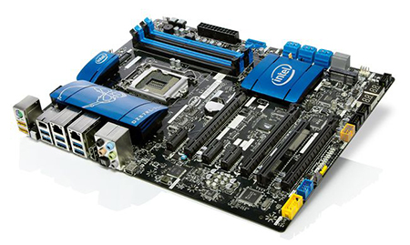

Fondamentale per costruire un computer performante e potente, la scheda madre e' un pallino di ogni amante dell'overclocking e del gaming. Ecco le migliori del 2014
Tra le ultime nate in casa AsRock, la Z87 Extreme6 e' compatibile con i processori Intel di quarta generazione (Haswell) e presenta due controller di rete e due porte HDMI oltre alle gia' presenti DVI-I e DisplayPort. Sul pannello frontale troviamo 10 porte SATA da 6 gigabit per secondo e quattro slot per la memoria di lavoro (sino a 32 gigabyte di RAM DDR3). Sei, invece, le porte USB 3.0 messe a disposizione dei progettisti AsRock: quattro si trovano sul pannello posteriore, altre due possono essere invece collegate esternamente, grazie alla scheda di espansione inclusa nella confezione.
Gli amanti dell'overclocking (l'overclock consiste nell'aumentare la frequenza di lavoro del processore) troveranno funzioni dedicate esclusivamente alle loro necessita'. Nell'angolo frontale inferiore sono presenti i pulsanti power e reset, mentre sopra di loro c'e' l'interruttore per il dual-bios, da utilizzare nel caso qualcosa non vada per il verso giusto.
Link Amazon.itNon solo processori. Intel prova a dire la sua anche nel campo delle schede madri e stupisce tutti con la DZ87KLT-75K, con chipset Z87 compatibile con i suoi processori di ultima generazione (Haswell). Con quattro slot per RAM (fino a 32 gigabyte di memoria DDR3) e tre PCI Express x16 (per configurazioni Nvidia SLI e AMD CrossFire), questa motherboard offre all'utente una versatilita' sufficiente sia per una configurazione da overclocking, sia per una configurazione da gaming.

Link Intel.itLe otto porte SATA da 6 gigabit per secondo e le sei porte USB 3.0, invece, garantiscono “spazio” a sufficienza per hard disk e periferiche esterne. Presenti anche due porte Ethernet gigabit e un connettore Thunderbolt, che consente di trasferire dati sino a 10 gigabit al secondo.
Come lascia intendere anche il nome, con la Z87-GD65 gaming MSI strizza l'occhio ai videogiocatori incalliti. Compatibile con i processori Intel di ultima generazione (Haswell), offre quattro slot per le RAM (fino ad un massimo di 32 gigabyte DDR3) e 8 porte SATA da 6 gigabit al secondo. Sul pannello posteriore troviamo 6 porte USB (quattro USB 3.0 e due USB 2.0), una porta VGA, una porta HDMI e una porta DisplayPort. Con tre porte PCI Express x16 Gen 3, permette la configurazione contemporanea di due o più schede video (sia Nvidia SLI, sia AMD CrossFire). Buona anche la dotazione per l'overclocking con pulsante CLR_CMOS sul pannello frontale (necessario per pulire la memoria CMOS nel caso le operazioni non vadano a buon fine), mentre i pulsanti power e reset si trovano direttamente sulla scheda madre. MSI ha aggiunto anche un pulsante per l'overclocking automatico, un piccolo display per la diagnostica e il pulsante GO2BIOS per l'accesso istantaneo al BIOS della scheda madre.
La vera sorpresa e' rappresentata dalla scheda Ethernet pensata appositamente per gli appassionati di MMORPG e simili: grazie alla Killer Ethernet della Qualcomm Atheros non si avra' piu' paura di lag o rallentamenti vari nel corso del gioco.
Link Amazon.itStudiata appositamente per i processori Intel Haswell, la Gigabyte Z87X-UD4H costituisce un'alternativa a schede madri di produttori piu' rinomati come ASUS e MSI. Questa motherboard offre sei attacchi SATA da 6 gigabit per secondo e quattro slot per RAM (puo' gestire fino ad un massimo di 32 gigabyte di RAM DDR3), mentre sul pannello posteriore si trovano un attacco DVI-D, un attacco HDMI e un attacco DisplayPort. Con sette slot di espansione (tre PCI Express x16 e quattro PCI Express x1) permette la gestione contemporanea di piu' schede grafiche, mentre le sei porte USB 3.0 garantiscono collegamenti a sufficienza per periferiche di qualsiasi genere.
La Gigabyte Z87X-UD4H fa l'occhiolino agli amanti dell'overclokig con una dotazione da prima della classe: pulsanti di power, reset, CLR_CMOS, commutatori per il BIOS, display POST e una fila di punti per rilevare la tensione. Migliorata, inoltre, la gestione del backup, in modo da poter correre ai ripari se le cose non dovessero andare come preventivato.
Link amazon.itIdeale per l'overclocking (data l'armatura termica dissipante), senza pero' disdegnare il gaming, la ASUS Sabertooth Z87 e' un da tenere in considerazione se si ha in mente di costruire un sistema ad alte prestazioni. Otto porte SATA da 6 gigabit per secondo, quattro slot per la RAM (supporta fino a 32 gigabyte DDR3), tre porte di espansione PCI Express x16 che permettono di realizzare configurazioni con due o piu' schede video (Nvidia SLI e AMD CrossFire) e chipset Z87 per processori Intel di ultima generazione. Questi i quattro assi della motherboard ASUS.
La Sabertooth Z87, pero', offre molto di piu'. Come, ad esempio, il pulsante DirectKey, pensato appositamente per tutti quegli utenti che accedono frequentemente al BIOS; o la speciale disposizione interna dei componenti, studiata appositamente per garantire un flusso d'aria sufficiente a mantenere una temperatura nella norma. Da non dimenticare, poi, le sei porte USB 3.0, la porta HDMI e la porta DisplayPort.
Link amazon.itCon la Maximus VI Extreme, ASUS vuole fare suoi gli appassionati di overclocking estremo presentanto una motherboard con specifiche di alto livello. Il chipset Z87 la rende compatibile con i processori Intel di ultima generazione (Haswell), mentre i quattro slot per la RAM permettono di installare a bordo sino a 32 gigabyte di memoria di lavoro. I cinque slot di espansione PCI Express x16 permettono di connettere sino a quattro schede grafiche in contemporanea (Nvidia SLI 4 way o AMD CrossFireX 4 way). Ben 10 i connettori SATA da 6 gigabit presenti sulla scheda, mentre le otto porte USB (sei USB 3.0 e due USB 2.0) permettono di collegare al computer un gran numero di periferiche esterne. Sul pannello posteriore presenti gli attacchi HDMI e DisplayPort.
La ASUS Maximus VI Extreme ha in dotazione anche l'OC Panel, piccola periferica esterna (puo' essere anche montata all'interno del case) che permette di controllare tutti i parametri dell'overclocking in tempo reale.
Link amazon.it